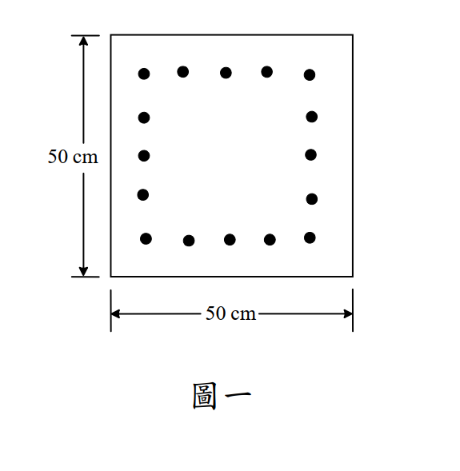
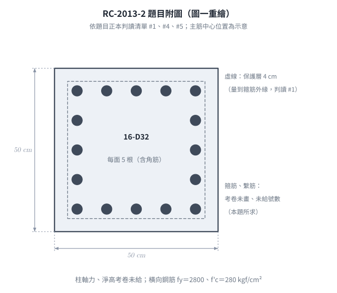
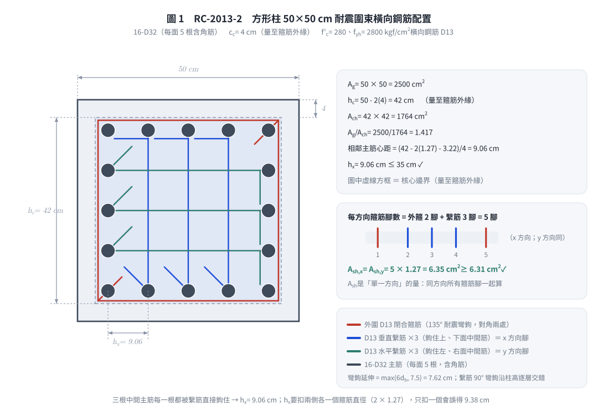
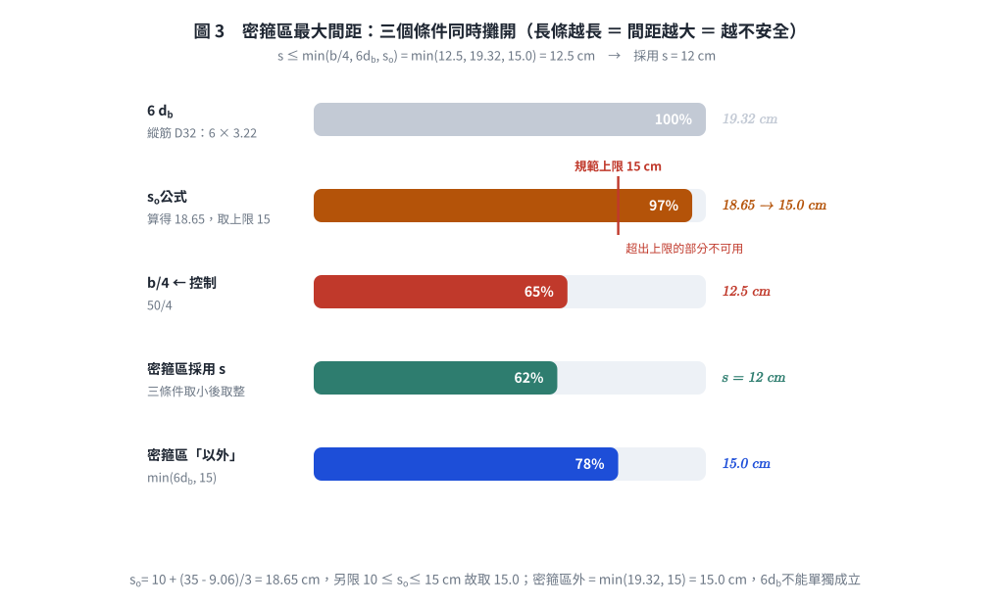
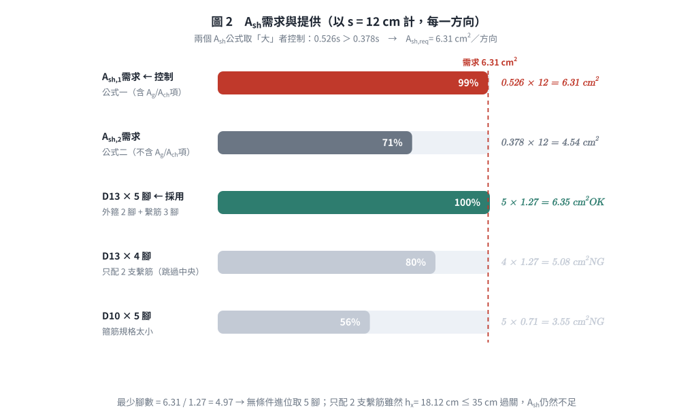
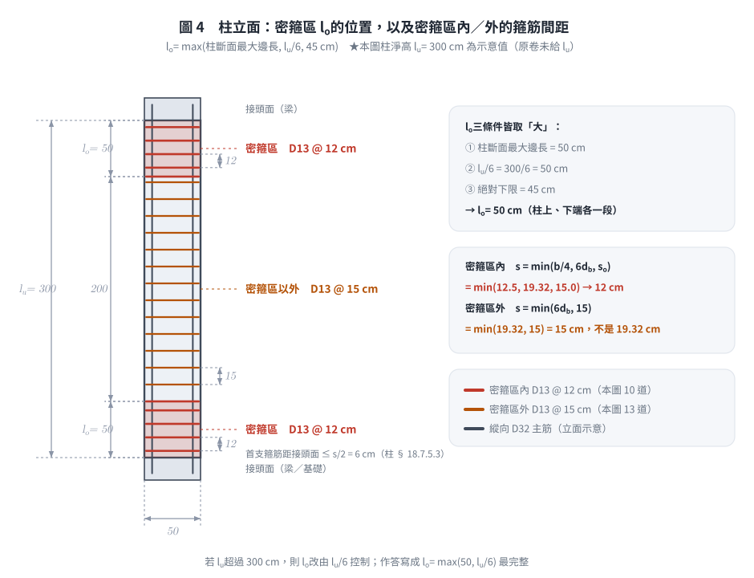

📄 題目正本：考卷原文・附圖・判讀清單（已確認）
RC-2013-2 題目正本
本檔只記錄考卷上寫了什麼、圖上畫了什麼，不含任何解法。解析見同資料夾
RC-2013-2.md。
判讀清單已經確認（凍結）；本檔原則上不再修改（改動須回考卷原圖並記 log）。
| 項目 | 內容 |
|---|---|
| 考卷 | raw/exams/RC-2013_鋼筋混凝土設計與預力.pdf 第 1 頁（正面），第二題 |
| 考年 | 民國 102 年（2013） |
| 配分 | 25 分 |
| 附圖 | RC-2013-2-fig-1.png（圖一：方形柱斷面） |
| 判讀狀態 | 已確認（2026-11-15 使用者授權依 Claude 建議確認；轉錄 2026-11-15；PyMuPDF 110 dpi 全頁目視，附圖 400–450 dpi 局部放大；文字以 PDF 文字層核對（公式以影像為準）；盲讀後才比對既有解析） |
1. 考卷原文（逐字）
二、一方形柱配置 16 支 D32 主筋如圖一所示，請依耐震設計特別規定配置橫向鋼筋，並繪圖說明。已知橫向鋼筋降伏強度 $f_y$＝2800 kgf/cm²，$f'_c$＝280 kgf/cm²，設保護層厚度為 4 cm。（25 分）
參考公式：$0.3sh_c\left(\dfrac{A_g}{A_{ch}}-1\right)\dfrac{f'_c}{f_{yh}}$；$0.09sh_c\dfrac{f'_c}{f_{yh}}$
2. 考卷給的公式、附表與參數
- 題文數值：16-D32；橫向鋼筋 $f_y$＝2800 kgf/cm²；$f'_c$＝280 kgf/cm²；保護層 4 cm。
- 卷首鋼筋資料：D10 $d_b$＝0.96 cm、$A_b$＝0.71 cm²；D13 1.27 cm、1.27 cm²；D25 2.54 cm、5.07 cm²；D29 2.87 cm、6.47 cm²；D32 3.22 cm、8.14 cm²。
- 參考公式（照錄，兩式並列、考卷未寫「取大」或 $A_{sh}\ge$）：$0.3sh_c(A_g/A_{ch}-1)f'_c/f_{yh}$；$0.09sh_c f'_c/f_{yh}$。
- 作答規範（卷首）：內政部營建署「混凝土結構設計規範」（內政部 100.6.9 臺內營字第 1000801914 號令）；中國土木水利學會「混凝土工程設計規範」（土木 401-100）。未依上述規範作答，不予計分。
- 沒有給：柱軸力 $P_u$、柱淨高、橫向鋼筋（箍筋、繫筋）號數、主筋 $f_y$、保護層量到箍筋或主筋、梁柱構架型式。
- 卷首注意事項：㈠可以使用電子計算器。㈡不必抄題，作答時請將試題題號及答案依照順序寫在試卷上，於本試題上作答者，不予計分。㈢本試題之相關公式、物理常數、符號意義及設計參數未提及時，請自行合理推斷與假設。
3. 附圖

圖面文字照錄：50 cm、50 cm、圖一。
4. 判讀清單
「把握」標不確定者優先列；解讀類項目（題目用字的意思）另標「解讀」。標「依 Claude 建議確認」者，為使用者 2026-11-15 授權「要我確認的請依你建議」後定案。
| # | 項目 | 判讀 | 圖上／題文依據 | 把握 |
|---|---|---|---|---|
| 1 | 保護層 4 cm 量到哪裡 | 量到最外層鋼筋（箍筋）外緣；箍筋外緣圍成 50－2×4＝42 cm 見方（本庫量法慣例：$h_c$、$A_{ch}$ 量到箍筋外緣） | 題文「設保護層厚度為 4 cm」未說明；圖上未畫箍筋。規範保護層定義為至最外層鋼筋 | 確定（解讀）；依 Claude 建議確認 |
| 2 | 橫向鋼筋號數 | 考卷沒有給，須自行選用並明列（題目要求「配置橫向鋼筋」本身即設計） | 題文只給 $f_y$＝2800 | 確定 |
| 3 | 柱軸力、淨高 | 考卷沒有給；與軸力有關的規範條款（現行版高軸壓的第三式、$l_o$ 長度）只能條件式說明或自行假設 | 全題 | 確定 |
| 4 | 斷面 | 方形 50×50 cm | 左側垂直、下方水平兩條 50 cm 尺寸線，端點對齊斷面外緣 | 確定 |
| 5 | 主筋排列 | 16-D32 沿周邊，每面 5 根（含角筋）：上排 5、下排 5、左右各 3 根中間筋；同面大致等距 | 450 dpi 數點：上 5、下 5、左 3、右 3（角筋計入上下排） | 確定 |
| 6 | 所求 | 依耐震特別規定設計橫向鋼筋（號數、腳數、間距、繫筋配置）並繪圖說明 | 題文「配置橫向鋼筋，並繪圖說明」 | 確定 |
| 7 | 規範版本 | 考卷指定 401-100；依根目錄 CLAUDE.md 主線用現行規範，考卷印出的兩式屬規範式、依現行規範換用 | 卷首作答規範 | 確定 |
轉錄：2026-11-15（RC-U3-3 批 2＋U1-3＋U2-3 題目正本推廣）
確認：2026-11-15 使用者授權依 Claude 建議確認（RC-U3-3 批 2＋U1-3＋U2-3 題目正本推廣，關卡一）
考題編號：RC-2013-2
主分類： RC-U3-3 韌性要求與耐震設計
副分類： RC-U1-2 RC 柱強度分析與設計
設計法： USD 強度設計法
標籤： 特殊矩形柱 耐震圍束箍筋 密箍區 Ash公式 D13箍筋 crossties繫筋 密箍區外間距 方形柱 16根D32
1. 題目（考卷原文見題目正本）
考卷原文、公式／附表、附圖與判讀清單（已確認）見
RC-2013-2-problem.md。本節只列解題時最容易讀錯的地方與本解使用的記號；題意以題目正本為準。

重繪自考卷圖一，依題目正本判讀清單 #1、#4、#5。本圖攔下的讀錯：保護層 4 cm 量到主筋而非箍筋外緣；每面主筋數數錯。
常見誤讀
| 項目 | 正確判讀 | 常見誤讀 |
|---|---|---|
| 保護層 4 cm | 量到箍筋外緣（$h_c$、$A_{ch}$ 依本庫慣例量到箍筋外緣） | 量到主筋外緣或筋心 |
| 主筋排列 | 每面 5 根（含角筋），共 16 根 | 每面 4 根或 3×3 排列 |
| 橫向鋼筋號數 | 考卷沒有給，屬設計（須明列選用） | 當作題目已知 |
| 柱軸力、淨高 | 考卷沒有給：與軸力有關的條款、$l_o$ 只能條件式說明 | 自行補值後當成題意 |
| 參考公式 | 兩式為規範式，主線依現行規範（含高軸壓第三式的適用條件） | 照抄、只用兩式 |
本解記號： $b=h$＝50 cm；保護層 4 cm（至箍筋外緣）→ 箍筋外緣圍成 42 cm 見方；16-D32（$d_b$＝3.22 cm）；$f_{yt}$＝2800、$f'_c$＝280 kgf/cm²。規範：現行建築物混凝土結構設計規範（2023 年版，ACI 318-19 世代）18.7.4、18.7.5（表 18.7.5.4）；考卷指定的 401-100 對照見 §5⑥（答案相同）。
判讀圖解（解析自繪）

圖 1 方形柱斷面與橫向鋼筋配置：外圍 D13 閉合箍搭配垂直、水平各 3 支繫筋，逐一鉤住三面向的中間主筋，右欄以 5 腳示意圖說明「外箍 2 腳＋繫筋 3 腳」。攔的是把 $A_{sh}$ 當整個斷面的量（它是單一方向所有箍筋腳的和）、漏掉中央那支繫筋使中間筋失去直接支撐，以及 $h_x$ 只扣一個箍筋直徑而非兩側各一個。
2. 考題核心精神與出題者意圖 (Core Concepts & Examiner's Intent)
核心精神：
特殊矩形框架柱（SMF Column）的耐震圍束設計有兩層工作：
- 間距控制：依三個上限（b/4、6db、so）取最小值，確保密箍區防止混凝土壓碎和縱筋挫屈
- Ash 控制：由兩個 Ash 公式取大，確保混凝土核心有足夠側向圍束力
出題者意圖：
- 測試密箍區最大間距三條件（b/4、6db、so）
- 測試 Ash 公式計算與繫筋（crossties）數量的決定
- 測試「圖說」：所有主筋都必須被角部箍筋或繫筋直接支撐
3. 解題戰略地圖與陷阱分析 (Strategic Roadmap & Trap Analysis)
作戰計畫：
Step 1：確認斷面參數（hc, Ag, Ach）
Step 2：計算兩公式所需 Ash / s（單位面積/單位間距的比值）
Step 3：決定密箍區最大間距 s（三條件 min）
Step 4：計算 s = 12 cm 時所需 Ash
Step 5：選擇箍筋規格與繫筋數量
Step 6：決定密箍區長度 lo
Step 7：繪圖說明
關鍵陷阱：
| # | 陷阱 | 應對策略 |
|---|---|---|
| 1 | hc 用淨尺寸（50-2×4=42）vs 核心中心尺寸 | ACI/CNS: hc = 外緣尺寸 - 2×保護層 = 到箍筋外面的距離 = 42 cm |
| 2 | Ash 是「一個方向」的箍筋截面積 | Ash 只計算同一方向（x or y）的所有箍筋腳（outer tie + crossties）之截面積 |
| 3 | 漏算 so 公式（第三條間距限制） | s ≤ so = 10 + (35 - hx)/3 ≤ 15 cm；需先算 hx（相鄰支撐主筋間最大中心距） |
| 4 | 忽略最大間距 so ≤ 15 cm 上限 | so 公式計算後還要加上限 15 cm（規範明文限制） |
| 5 | crossties 數量不足導致 Ash 不夠 | 本題以 D13 搭配 1 外箍 + 3 繫筋 = 5 腳 ✓；若只用 4 腳（2 繫筋），則 Ash 不足 |
3.5 變數層次分析 (Variable Hierarchy Analysis)
複習提示：第一次解題後，在每個卡住的知識點旁標記
⚠；第二次複習時只看有⚠的項目。
最終目標
決定密箍區間距 s（三條件最小值）、選定橫向鋼筋規格與配置（Ash 雙公式驗算）
本題關鍵公式（依計算順序）
$\boxed{\cdot}$ = 需由前步驟推導，非題目直接給定的變數
$$\text{Step 1:}\quad h_c = b - 2c_c,\quad A_g = b^2,\quad A_{ch} = \boxed{h_c}^2$$
$$\text{Step 2:}\quad A_{sh,1} = 0.3\,s\,\boxed{h_c}\!\left(\frac{A_g}{\boxed{A_{ch}}}-1\right)\!\frac{f'_c}{f_{yh}},\quad A_{sh,2} = 0.09\,s\,\boxed{h_c}\frac{f'_c}{f_{yh}}$$
$$\text{Step 3（s 上限）:}\quad s \leq \min\!\left(\frac{b}{4},\;6\,d_b,\;s_o\right),\quad s_o = 10 + \frac{35-\boxed{h_x}}{3} \leq 15\ \text{cm}$$
$$\text{Step 4:}\quad A_{sh,\text{req}} = \max(A_{sh,1},A_{sh,2})\big|_{s=12\text{cm}}$$
$$\text{Step 5:}\quad A_{sh,\text{prov}} = n_{\text{legs}}\times A_b \geq A_{sh,\text{req}}$$
L1：題目直接給定
| 符號 | 數值 | 說明 |
|---|---|---|
| $b = h$ | 50 cm | 方形柱邊長 |
| $c_c$ | 4 cm | 保護層（至箍筋外緣） |
| $d_b$ | 3.22 cm | D32 主筋直徑 |
| $f_{yh}$ | 2800 kgf/cm² | 橫向鋼筋降伏強度 |
| $f'_c$ | 280 kgf/cm² | 混凝土強度 |
| D13 | $A_b = 1.27\ \text{cm}^2$ | 箍筋選用規格（見解析） |
L2：需知識點推導
Step 1：斷面幾何
| 符號 | 公式／來源 | 卡關? |
|---|---|---|
| $h_c$ | $50 - 2\times4 = 42\ \text{cm}$（核心邊長，外到外） | |
| $A_g$ | $50^2 = 2500\ \text{cm}^2$（全斷面積） | |
| $A_{ch}$ | $42^2 = 1764\ \text{cm}^2$（核心截面積） | |
| $A_g/A_{ch}$ | $2500/1764 = 1.417$ |
Step 2：Ash 公式
| 符號 | 公式／來源 | 卡關? |
|---|---|---|
| $A_{sh,1}/s$ | $0.3\times42\times0.417\times(280/2800) = 0.526\ \text{cm}^2/\text{cm}$ | |
| $A_{sh,2}/s$ | $0.09\times42\times(280/2800) = 0.378\ \text{cm}^2/\text{cm}$ | |
| 控制 | 公式1控制（0.526 > 0.378） |
Step 3：密箍區最大間距
| 條件 | 計算 | 結果 |
|---|---|---|
| $b/4$ | $50/4 = 12.5\ \text{cm}$ | 12.5 cm |
| $6\,d_b$ | $6\times3.22 = 19.3\ \text{cm}$ | 19.3 cm |
| $s_o$ | $10 + (35-h_x)/3$，限 $10\le s_o \le15$ cm；$h_x = 9.06$ | 15 cm（見下） |
| $s$ | $\min(12.5, 19.3, 15) = 12.5\ \text{cm} \Rightarrow$ 取 $s = 12\ \text{cm}$ | 12 cm |
Step 4：Ash 需求與配置
| 符號 | 公式／來源 | 卡關? |
|---|---|---|
| $A_{sh,\text{req}}$ | $0.526\times12 = 6.31\ \text{cm}^2$（單方向） | |
| D13 腳數 | 需 $\geq 6.31/1.27 = 4.97$ 腳 → 取 5 腳 | |
| 配置 | 1 外方箍（2 腳/方向）+ 3 繫筋（3 腳/方向）= 5 腳/方向 | |
| $A_{sh,\text{prov}}$ | $5\times1.27 = 6.35\ \text{cm}^2 \geq 6.31$ ✓ |
L3：深層知識（不懂就卡住）
| 知識點 | 說明 | 卡關? |
|---|---|---|
| Ash 是「單方向」概念 | Ash_x = 所有沿 y 方向延伸的箍筋腳截面積；外方箍提供 2 腳，每根繫筋提供 1 腳 | |
| so 公式的物理意義 | hx 小（繫筋多、支點密）→ so 大（可用較大間距）；反之 hx 大→ so 小（需縮小間距補償） | |
| 所有主筋必須被直接支撐 | 規範 18.7.5.2 要求（舊 ACI 第 21 章）：每根縱筋需在角部或 hx ≤ 35 cm 範圍內被繫筋支撐；方形柱 3 根中間筋均需繫筋 | |
| lo 密箍區長度 | SMF 柱 lo = max(柱最大邊長、淨高/6、450 mm)；本題柱高未知，至少 max(50, 45) = 50 cm |
4. 步驟化詳細計算過程 (Step-by-Step Detailed Calculation)
Step 1：斷面幾何（橫向鋼筋取 D13）
$$h_c = 50 - 2 \times c_c = 50 - 2\times4 = \boxed{42\ \text{cm}} \quad \text{（核心邊長，量至箍筋外緣）}$$
$$A_g = 50^2 = 2500\ \text{cm}^2 \qquad A_{ch} = 42^2 = \boxed{1764\ \text{cm}^2}$$
$$\frac{A_g}{A_{ch}} = \frac{2500}{1764} = 1.417 \qquad \frac{f'_c}{f_{yh}} = \frac{280}{2800} = 0.10$$
Step 2：計算所需 Ash（兩公式取大）
$$A_{sh,1} = 0.3\,s\,h_c\!\left(\frac{A_g}{A_{ch}}-1\right)\!\frac{f'_c}{f_{yh}} = 0.3\times s\times42\times0.417\times0.10 = 0.526\,s\ \text{cm}^2$$
$$A_{sh,2} = 0.09\,s\,h_c\frac{f'_c}{f_{yh}} = 0.09\times s\times42\times0.10 = 0.378\,s\ \text{cm}^2$$
$$\Rightarrow \quad \textbf{公式 1 控制：} A_{sh} \geq 0.526\,s$$
現行表 18.7.5.4 另有第三式 $0.2k_fk_n\dfrac{P_u}{f_{yt}A_{ch}}s\,b_c$，僅在 $P_u > 0.3A_gf'_c$（＝210 tf）或 $f'_c > 70$ MPa 時才須併入取大。本題 $f'_c$＝280 kgf/cm²（27.5 MPa），$P_u$ 考卷未給：$P_u \le 210$ tf 時以上兩式控制；$P_u$ 較大時的影響見 §5⑥。
Step 3：密箍區最大間距（三條件取小）
條件一：$b/4$
$$s \leq \frac{b}{4} = \frac{50}{4} = 12.5\ \text{cm}$$
條件二：$6\,d_b$（縱筋直徑）
$$s \leq 6\times d_{b,\text{long}} = 6\times3.22 = 19.3\ \text{cm}$$
條件三：$s_o$ 公式（先算 hx）
主筋排列（5 根/面，共 16 根），以 D13 箍筋（$d_b = 1.27\ \text{cm}$）計算主筋心距：
$h_c = 42$ cm 是量到箍筋外緣，故主筋中心之間的總距離要再扣兩個箍筋直徑與一個主筋直徑：
$$\text{相鄰主筋心距} = \frac{h_c - 2d_{\text{tie}} - d_{\text{long}}}{4\ \text{個間隔}} = \frac{42 - 2(1.27) - 3.22}{4} = \frac{36.24}{4} = \mathbf{9.06\ \text{cm}}$$
⚠ 2026-08-22 勘誤： 舊版寫 $\dfrac{42 - 1.27 - 3.22}{4} = 9.38$ cm，只扣了一個箍筋直徑。
正確應扣兩側各一個（$2 \times 1.27$），得 9.06 cm。$s_o$ 兩種配置都被 15 cm 上限截住，結論不受影響。
兩種繫筋配置下的 $h_x$：
| 配置 | $h_x$ | $s_o = 10 + \dfrac{35-h_x}{3}$ | 取上限後 |
|---|---|---|---|
| 所有中間筋均配繫筋（本解採用） | 9.06 cm | 18.65 cm | 15 cm |
| 只在位置 2、4 配繫筋 | 18.12 cm | 15.63 cm | 15 cm |
兩者都 $> 15$，故 $s_o = 15$ cm（規範上限 $10 \le s_o \le 15$ cm）。且 $h_x \le 35$ cm ✓（§18.7.5.2）。
$$\text{三條件：} s \leq \min(12.5,\ 19.3,\ 15.0) = 12.5\ \text{cm}$$
$$\boxed{s = 12\ \text{cm}} \quad \text{（取整至 cm）}$$

圖 2 密箍區間距的三個上限與採用值同時攤開，$s_o$ 的長條仍畫到公式原算值並在 15 cm 處立一條規範上限線。攔的是漏算第三條 $s_o$、忘記 $s_o$ 另有 15 cm 上限，以及以為 $6d_b$ 可以單獨成立（舊版本頁因此誤寫密箍區外可用 19 cm）。
Step 4：決定箍筋配置
以 $s = 12\ \text{cm}$ 代入控制公式：
$$A_{sh,\text{req}} = 0.526 \times 12 = \boxed{6.31\ \text{cm}^2/\text{方向}}$$
選用 D13 箍筋（$A_b = 1.27\ \text{cm}^2$）：
最少腿數 = $\lceil 6.31/1.27 \rceil = \lceil 4.97 \rceil = 5$ 腳/方向
配置：
| 構件 | 提供腳數（x 方向） | 提供腳數（y 方向） |
|---|---|---|
| 外方箍（D13 方形箍） | 2（左右兩腿） | 2（上下兩腿） |
| 繫筋①（位置 2，連上下面中間筋） | 1 | 0 |
| 繫筋②（位置 3，連上下面中間筋） | 1 | 0 |
| 繫筋③（位置 4，連上下面中間筋） | 1 | 0 |
| 繫筋④（位置 2，連左右面中間筋） | 0 | 1 |
| 繫筋⑤（位置 3，連左右面中間筋） | 0 | 1 |
| 繫筋⑥（位置 4，連左右面中間筋） | 0 | 1 |
| 合計 | 5 | 5 |
$$A_{sh,x} = A_{sh,y} = 5 \times 1.27 = \boxed{6.35\ \text{cm}^2} \geq 6.31\ ✓$$

圖 3 以 $s = 12$ cm 攤開兩個公式的需求值與三種配置的提供值。攔的是兩式取 min 而非 max、改用 D10，以及只在位置 2、4 配繫筋——$h_x$ 雖過關但 $A_{sh}$ 不足。
Step 5：密箍區長度 $l_o$
$$l_o \geq \max\!\left(\text{柱斷面最大邊長},\ \frac{l_u}{6},\ 45\ \text{cm}\right) = \max\!\left(50,\ \frac{l_u}{6},\ 45\right)$$
柱淨高 $l_u$ 原卷未給定；因 $50 > 45$，無論 $l_u$ 多少，$l_o$ 至少為 50 cm；
若 $l_u > 300$ cm 則由 $l_u/6$ 控制。作答時寫成「$l_o = \max(50,\ l_u/6)$」最完整。
Step 5b：密箍區「以外」的間距（易漏）
$$s_{\text{outside}} \leq \min\big(6d_b,\ 15\ \text{cm}\big) = \min(19.3,\ 15) = \boxed{15\ \text{cm}}$$
不是只有 $6d_b$——150 mm 這個絕對上限同樣要查（詳見 §5③）。
Step 5c：第一支箍筋的位置（易漏）
$$s_{\text{first}} \leq \frac{s}{2} = \frac{12}{2} = \boxed{6\ \text{cm}} \quad(\text{自接頭面量起})$$
現行規範（土木 401-112，同 ACI 318-19）§18.7.5.3 對柱的規定是「第一支箍筋距接頭面不得超過密箍區間距之半 $s/2$」（401-100 條號 15.4.3、舊版記為 $s_o/2$；現行記號 $s_o$ 專指 Step 3 的間距上限式＝15 cm，勿混用）。
這與梁的規定不同——耐震梁是距柱面 $\le 5$ cm（§18.6.4.4），兩者不可互換
（同庫 RC-2025-2 考的正是梁的那一條）。

圖 4 柱立面（示意柱高 $l_u = 300$ cm）：密箍區位置由 $l_o$ 三條件取大決定，區內外的箍筋落點依 12／15 cm 現算逐道畫出。攔的是 $l_o$ 沒有三條件取大、密箍區以外誤用 $6d_b$，以及把梁的「第一支 5 cm」套到柱上（柱是 $s/2$）。
箍筋配置圖說（原卷要求「並繪圖說明」）
原卷要求的「繪圖說明」即 §1 的圖 1（向量重繪）：外圍 D13 閉合箍於對角兩處設 $135°$ 耐震彎鉤、
垂直與水平各 3 支 D13 繫筋逐一鉤住三面向的中間主筋，故每一方向的箍筋腳數 = 外箍 2 腳 + 繫筋 3 腳 = 5 腳。
間距與密箍區位置見圖 4（密箍區內 $s = 12$ cm、以外 $s = 15$ cm）；
繫筋的 $90°$ 彎鉤須沿柱高相鄰兩層交錯配置（§18.7.5.2(f)）。
Step 6：彙整（密箍區設計）
| 項目 | 數值 |
|---|---|
| 密箍區最大間距 $s$ | 12 cm |
| 箍筋規格 | D13（$f_{yh}=2800\ \text{kgf/cm}^2$） |
| 每組橫向鋼筋組成 | 外方箍 × 1 + 繫筋 × 3（每方向） |
| $A_{sh,\text{prov}}$ | $5 \times 1.27 = \mathbf{6.35\ \text{cm}^2}$（每方向） |
| $A_{sh,\text{req}}$ | $6.31\ \text{cm}^2$ → OK ✓ |
| 第一支箍筋位置 | $\le s/2 = \mathbf{6\ cm}$（自接頭面量起，§18.7.5.3） |
| 密箍區長度 $l_o$ | $\geq \max(50\ \text{cm},\ l_u/6,\ 45\ \text{cm})$ |
5. 關鍵爭議點與進階探討 (Critical Issues & Advanced Discussion)
① D13 vs D10 的選用
以 D10（$A_b = 0.71\ \text{cm}^2$）嘗試：最多 5 腳 × 0.71 = 3.55 cm² < 6.31 cm²。
→ D10 不足，必須用 D13（或更大規格）。
② 全部中間筋都需繫筋嗎？
規範 18.7.5.2 要求（舊 ACI 第 21 章）：每根縱筋需距最近支撐點 ≤ 35 cm（hx 限制）。本柱相鄰主筋間距 = 9.06 cm，若只在位置 2 和 4 配繫筋（跳過 3），位置 3 距最近支點 = 9.06 cm < 35 cm ✓。
但若跳過位置 3 只用 2 繫筋/方向（4 腳 D13 = 5.08 cm²），則 $A_{sh}$ 不足（5.08 < 6.31）。
→ 因 Ash 要求，仍需 3 繫筋/方向（支撐所有中間筋）。
③ 密箍區外的間距（2026-08-22 改正）
⚠ 舊版寫「$s_{\text{outside}} \le 6d_b = 19.3$ cm，D13@15 或 D13@19 即可」——19 cm 違規。
現行規範（土木 401-112，同 ACI 318-19）§18.7.5.5（401-100 條號 15.4.4）明定：$l_o$ 以外的柱身，
$$s_{\text{outside}} \leq \min\big(6d_b,\ 150\ \text{mm}\big) = \min(6\times3.22,\ 15) = \min(19.3,\ 15) = \boxed{15\ \text{cm}}$$
（若剪力需求 §18.7.6 或搭接規定要求更密，取更小者。）
「$6d_b$」從來不是單獨成立的上限，永遠要跟 150 mm 一起取小。
④ 縱向鋼筋量檢核（順手可寫，有加分）
$$\rho_g = \frac{16 \times 8.14}{50\times50} = \frac{130.24}{2500} = 0.0521 = 5.21\%$$
$0.01 \le \rho_g \le 0.06$ ✓（§18.7.4.1；一般柱 §10.6.1.1 亦同）。
5.21% 已接近 6% 上限，這也解釋了為何 $A_{sh}$ 需要到 5 腳 D13——柱的配筋本來就密。
⑤ 繫筋的施工規定（繪圖時要標）
- 繫筋兩端彎鉤：一端 $135°$、另一端可為 $90°$，但沿柱高相鄰兩層的 $90°$ 彎鉤須交錯配置（§18.7.5.2(f)）。
- 繫筋直徑與間距須與閉合箍筋相同（本題同為 D13 @12 cm）。
- 耐震彎鉤延伸長度 $\ge 6d_b$ 且 $\ge 75$ mm（§25.3.4）。
⑥ 規範版本對照（考卷指定 401-100 vs 現行 2023 年版）
原卷指定 土木 401-100（ACI 318-05 世代）；本解主線依現行 建築物混凝土結構設計規範 2023 年版（土木 401-112，ACI 318-19 世代）。
本題答案（$s = 12$ cm、5 腳 D13、$A_{sh} = 6.35$ cm²）在兩版下完全相同，差異如下：
| 項目 | 401-100（原卷） | 現行 2023 年版（主線） | 影響 |
|---|---|---|---|
| $A_{sh}$ 公式 | 兩式取大：$0.3sb_c\frac{f'_c}{f_{yt}}\!\left(\frac{A_g}{A_{ch}}-1\right)$、$0.09sb_c\frac{f'_c}{f_{yt}}$ | 三式取大，Table 18.7.5.4 新增 $(f)\ 0.2\,k_f k_n \dfrac{P_u}{f_{yt}A_{ch}}$ |
本題不觸發（見下） |
| 第三式的適用條件 | — | 僅當 $P_u > 0.3A_gf'_c$ 或 $f'_c > 70$ MPa 時才須查 | $0.3A_gf'_c = 0.3\times2500\times280 = \mathbf{210\ tf}$； $f'_c = 280$ kgf/cm² $= 27.5$ MPa $< 70$ ✓ |
| $k_f,\ k_n$ | — | $k_f = \dfrac{f'_c}{175}+0.6 \ge 1.0$（MPa）；$k_n = \dfrac{n_\ell}{n_\ell-2}$，$n_\ell$ ＝ 被橫向支撐的縱筋數 | 本題 $k_f = 1.0$、$n_\ell = 16 \Rightarrow k_n = 1.143$（備用） |
| 密箍區間距 | $\min(b/4,\ 6d_b,\ s_o)$ | 同；但 $6d_b$ 改為「最小縱筋」之 $6d_b$，且 Grade 550 鋼筋改 $5d_b$ | 本題 $f_y = 4200$（Grade 420）→ $6d_b$ ✓ 不變 |
| $s_o$ | $10 + \dfrac{35-h_x}{3}$，$10 \le s_o \le 15$ cm | 同（§18.7.5.3(c)） | 不變 |
| $h_x$ 上限 | 35 cm | 同（§18.7.5.2）；本題 9.06 cm ✓ | 不變 |
| $l_o$ | $\max$(斷面最大邊, $l_u/6$, 45 cm) | 同（§18.7.5.1） | 不變 |
| $l_o$ 以外之間距 | $\min(6d_b,\ 15\ \text{cm})$ | 同（§18.7.5.5） | 舊版本頁誤寫 19.3 cm，已改正 |
| $\rho_g$ | $0.01 \sim 0.06$ | 同（§18.7.4.1） | 5.21% ✓ |
若題目有給 $P_u$（延伸練習）： 假設 $P_u = 250$ tf $> 210$ tf，則須加查第三式
$$\frac{A_{sh}}{s\,b_c} \ge 0.2\,k_f k_n \frac{P_u}{f_{yt}A_{ch}} = 0.2(1.0)(1.143)\frac{250{,}000}{2800\times1764} = 0.01158 \ \Rightarrow\ \frac{A_{sh}}{s} = 0.486\ \text{cm}^2/\text{cm}$$
仍小於本題控制值 0.526，不會改變答案；但當 $P_u$ 更大或用高強度混凝土時，第三式很容易變成控制條件。
這正是 318-19 新增這一式的用意：高軸壓柱的圍束需求與 $A_g/A_{ch}$ 無關，而與軸壓力直接相關。
圖解補繪：2026-09-07（向量圖 4 張，腳本 figs/gen_RC-2013-2.py，可重跑；腳本檔尾對 §4 公佈值做 assert）
修正日期：2026-11-15（§1 改為指向題目正本，插入重繪附圖 figs/RC-2013-2-fig-1-problem.svg；舊 §1 重述改寫為常見誤讀與本解記號；本行非答案勘誤）
修正日期：2026-11-15（改依現行台灣規範（建築物混凝土結構設計規範 2023／耐震規範 111）：主線條文改寫為現行版（表 18.7.5.4 三式之第三式適用條件併入 Step 2），舊 §6「依最新規範對照」併入 §5⑥ 作 401-100 對照；數值與答案不變（盲解比對一致）；撤除 §1 待勘誤提示）
修正日期：2026-11-15（落實檢查 RECHECK-RC-U3-3-B2 輕微殘留修正，非勘誤，數值與答案不變：條文引用「ACI 21」「土木 401-112 §15.4.x」改為現行 18.7.5.x（附 401-100 舊條號）；第一支箍筋記號 $s_o/2$ → $s/2$，避免與 $s_o$＝15 cm 上限式混淆）